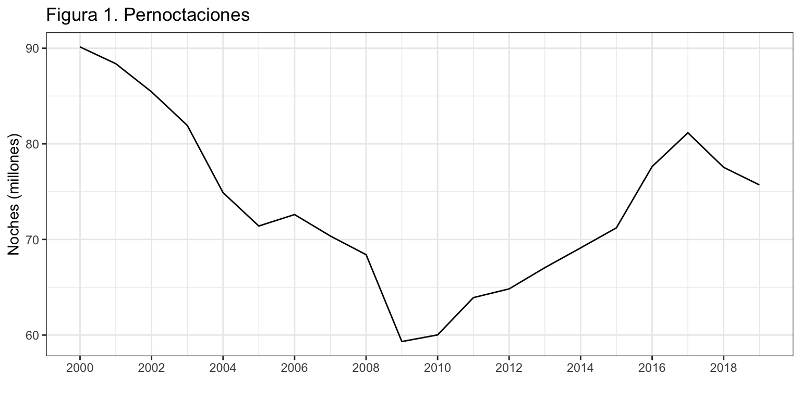
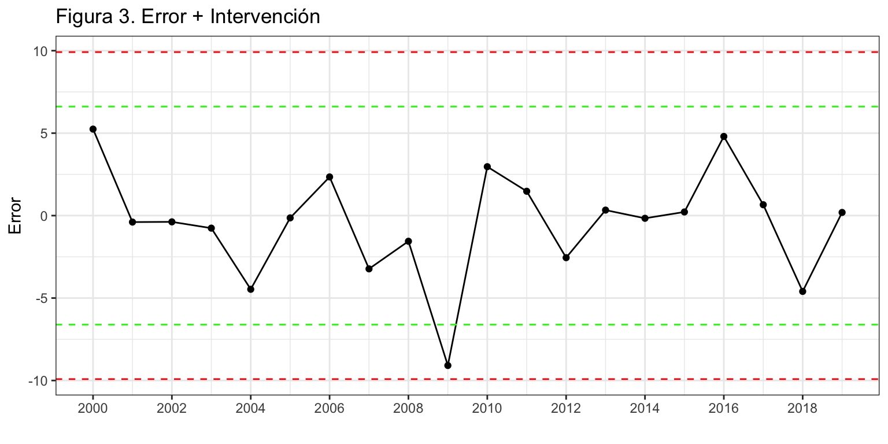
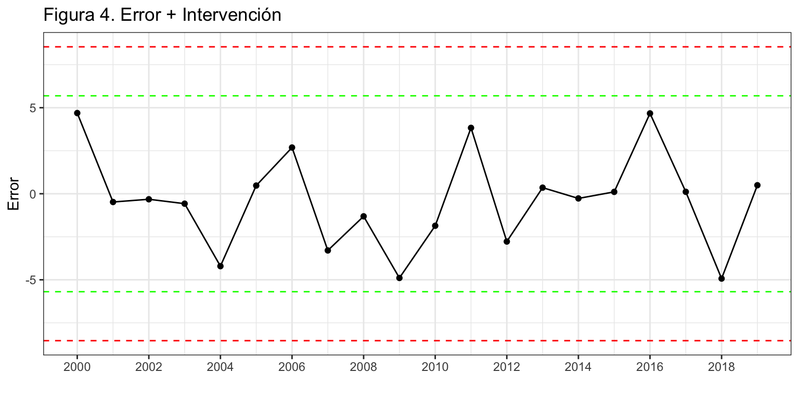
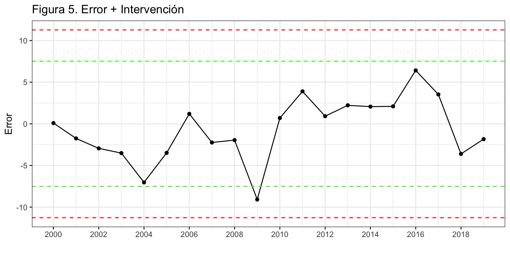
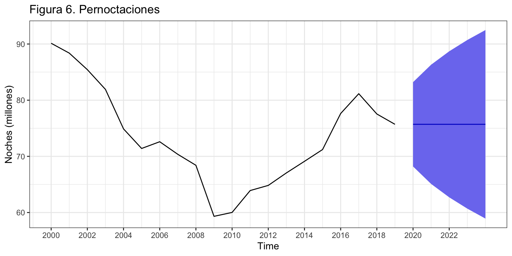

Introducción
Consideremos de nuevo la serie temporal correspondiente al número de pernoctaciones que los turistas extranjeros realizan en España en alojamientos turísticos autorizados (que llamaremos Pernoctaciones en adelante). Esta serie está disponible en Eurostat desde enero de 2000 hasta diciembre de 2019, un total de 20 años y 240 observaciones.
Para su análisis por modelos ARIMA sin estacionalidad vamos a anualizarla (20 años) y a dividirla por un millón para cambiar las unidades.
Pernoctaciones <- read.csv2("./series/Pernoctaciones.csv", header = TRUE)
Pernoctaciones <- ts(Pernoctaciones[,2], start = 2000, frequency = 12)
Pernoctaciones <- aggregate(Pernoctaciones/10^6, FUN = sum)
autoplot(Pernoctaciones,
xlab = "",
ylab = "Noches (millones)",
main = "Figura 1. Pernoctaciones") +
scale_x_continuous(breaks= seq(2000, 2020, 2))

Análisis de la serie Pernoctaciones \(\sim I(0)\)
En este epígrafe asumiremos que la serie Pernoctaciones es estacionaria.
Identificación
Vamos a identificar los valores de \(p\) y \(q\) a partir de auto.arima.
Series: Pernoctaciones
ARIMA(2,0,0) with non-zero mean
Coefficients:
ar1 ar2 mean
1.3559 -0.4894 75.6030
s.e. 0.1874 0.2004 5.1908
sigma^2 estimated as 12.45: log likelihood=-53.13
AIC=114.25 AICc=116.92 BIC=118.24
Se identifica un proceso ARIMA(2, 0, 0) con constante. La estimación de este modelo muestra que los dos coeficientes estimados son aparentemente significativos y el análisis del error revela un valor que supera las 2.5 desviaciones típicas en el año 2009 (figura 3).
arima200 <- Arima(Pernoctaciones,
order = c(2, 0, 0),
include.mean = TRUE)
error <- residuals(arima200)
sderror <- sd(error)
autoplot(error, series="Error",
colour = "black",
xlab = "",
ylab = "Error",
main = "Figura 3. Error + Intervención") +
geom_hline(yintercept = c(-3, -2, 2, 3)*sderror,
colour = c("red", "green", "green", "red"),
lty = 2) +
geom_point() +
scale_x_continuous(breaks= seq(2000, 2020, 2))

Creamos una variable ficticia para el año 2009 y la incluimos en el modelo. Ahora ya no se identifican más valores atípicos (figura 4).
Series: Pernoctaciones
Regression with ARIMA(2,0,0) errors
Coefficients:
ar1 ar2 intercept xreg
1.4486 -0.5742 75.5041 -3.9615
s.e. 0.1749 0.1885 4.8489 1.5168
sigma^2 estimated as 9.794: log likelihood=-50.3
AIC=110.61 AICc=114.89 BIC=115.58
error <- residuals(arima200)
sderror <- sd(error)
autoplot(error, series="Error",
colour = "black",
xlab = "",
ylab = "Error",
main = "Figura 4. Error + Intervención") +
geom_hline(yintercept = c(-3, -2, 2, 3)*sderror,
colour = c("red", "green", "green", "red"),
lty = 2) +
geom_point() +
scale_x_continuous(breaks= seq(2000, 2020, 2))

Validación
Variables son significativas
Todos dos coeficientes estimados (\(\phi_1\), \(\phi_2\), \(\mu\) y \(\gamma_{d2009}\)) son significativos.
Wald test:
----------
Chi-squared test:
X2 = 68.6, df = 1, P(> X2) = 0.00000000000000011
Wald test:
----------
Chi-squared test:
X2 = 9.3, df = 1, P(> X2) = 0.0023
Wald test:
----------
Chi-squared test:
X2 = 242.5, df = 1, P(> X2) = 0.0
Wald test:
----------
Chi-squared test:
X2 = 6.8, df = 1, P(> X2) = 0.009
Medidas de error
El error medio es 3 defunciones (RMSE) y el error porcentual medio es 2.96% (MAPE).
ME RMSE MAE MPE MAPE MASE ACF1
Training set -0.38 2.8 2.12 -0.66 2.96 0.66 -0.1
Análisis de la serie Pernoctaciones \(\sim I(1)\)
En este epígrafe asumiremos que la serie Pernoctaciones no es estacionaria, pero su primera diferencia sí es estacionaria.
Identificación
Identificaremos los valores de \(p\) y \(q\) a partir de auto.arima.
Series: Pernoctaciones
ARIMA(0,1,0)
sigma^2 estimated as 14.66: log likelihood=-52.47
AIC=106.94 AICc=107.18 BIC=107.89
Se identifica un proceso ARIMA(0, 1, 0) sin deriva, es decir un paseo aleatorio o método Ingenuo I. Tras estimar el modelo, el análisis del error no revela ningún valor atípico (figura 5).
arima010 <- Arima(Pernoctaciones,
order = c(0, 1, 0),
include.constant = FALSE)
error <- residuals(arima010)
sderror <- sd(error)
autoplot(error, series="Error",
colour = "black",
xlab = "",
ylab = "Error",
main = "Figura 5. Error + Intervención") +
geom_hline(yintercept = c(-3, -2, 2, 3)*sderror,
colour = c("red", "green", "green", "red"),
lty = 2) +
geom_point() +
scale_x_continuous(breaks= seq(2000, 2020, 2))

Validación
Medidas de error
El error medio es 3.7 defunciones (RMSE) y el error porcentual medio es 4.24% (MAPE).
ME RMSE MAE MPE MAPE MASE ACF1
Training set -0.72 3.73 3.03 -1.01 4.24 0.95 0.41
Comparativa entre modelos
Si atendemos a los indicadores de calidad de ajuste de ambos modelos, todos apuntan al proceso ARIMA(2, 0, 0) como el que mejor ajusta a los datos. El error medio (RMSE) para AR(2) es casi un millón de pernoctaciones menor que para ARIMA(0, 1, 0) y el error relativo es más de un punto porcentual menor.
ME RMSE MAE MPE MAPE MASE ACF1
Training set -0.38 2.8 2.12 -0.66 2.96 0.66 -0.1
ME RMSE MAE MPE MAPE MASE ACF1
Training set -0.72 3.73 3.03 -1.01 4.24 0.95 0.41
Si atendemos a los errores de previsión extra-muestrales, el mejor proceso depende del horizonte temporal:
- para previsiones de uno a tres periodos vista el proceso ARIMA(0, 1, 0) es superior al error del proceso AR(2).
- para previsiones a 4 y 5 periodos vista el proceso AR(2) es el mejor.
[1] 5.971604 8.114061 11.216683 12.208794 10.009389
[1] 2.985332 7.049167 10.655383 13.277976 14.983711
Otro ejemplo más de que mejor ajuste no implica mejor predicción. En este caso el modelo AR(2) sobreajusta (overfitting) los datos y genera peores predicciones a corto plazo.
Asumimos que se da más peso a las predicciones a corto plazo y concluimos que el mejor modelo con propósitos predictivos es \(Pernoctaciones \sim ARIMA(0, 1, 0)\).
Nota: Es la tercera vez que el método Ingenuo I (paseo aleatorio) aparece como el más adecuado para predecir la serie anual de pernoctaciones. Era el mejor de entre los métodos simples. Al elegir dentro de la familia de Alisado Exponencial, también fue el mejor. Ahora, es el proceso ARIMA más adecuado. Para esta serie, que es corta y aparentemente sencilla, ninguna aproximación compleja mejora el método Ingenuo I, más fácil de obtener e interpretar.
Interpretación del modelo
El proceso es un paseo aleatorio (ingenuo I) \(Pernoctaciones \sim ARIMA(0, 1, 0)\): \[(1 - L) Pernoctaciones_t = \varepsilon_t\] o \[Pernoctaciones_t = Pernoctaciones_{t-1} + \varepsilon_t.\] El modelo estimado queda: \[\widehat{Pernoctaciones}_t = Pernoctaciones_{t-1}.\] Cada año el número de pernoctaciones previsto es el mismo que el del año previo.
Predicción
Podemos usar el modelo estimado para predecir los casos pernoctaciones para los próximos 5 años.
Point Forecast Lo 95 Hi 95
2020 75.70578 68.20043 83.21113
2021 75.70578 65.09161 86.31994
2022 75.70578 62.70613 88.70542
2023 75.70578 60.69508 90.71648
2024 75.70578 58.92331 92.48825

LS0tCnRpdGxlOiAiUGVybm9jdGFjaW9uZXMgZW4gYWxvamFtaWVudG9zIHR1csOtc3RpY29zIGRlIHR1cmlzdGFzIGV4dHJhbmplcm9zIgpzdWJ0aXRsZTogIlByb2Nlc29zIEFSSU1BIChzaW4gZXN0YWNpb25hbGlkYWQpIgphdXRob3I6ICJJdsOhbiBBcnJpYmFzIChEZXB0by4gQW7DoWxpc2lzIEVjb27Ds21pY28uIFVuaXZlcnNpdGF0IGRlIFZhbMOobmNpYSkiCm91dHB1dDogCiAgaHRtbF9kb2N1bWVudDoKICAgIHRoZW1lOiBjZXJ1bGVhbgogICAgaGlnaGxpZ2h0OiBweWdtZW50cyAKICAgIGZpZ19jYXB0aW9uOiBmYWxzZQogICAgZGZfcHJpbnQ6IGthYmxlCiAgICB0b2M6IHRydWUKICAgIHRvY19kZXB0aDogMgogICAgbnVtYmVyX3NlY3Rpb25zOiB0cnVlCiAgICBzZWxmX2NvbnRhaW5lZDogdHJ1ZQogICAgY29kZV9kb3dubG9hZDogdHJ1ZQotLS0KCmBgYHtyIGNodW5rX3NldHVwLCBlY2hvID0gRkFMU0V9CmtuaXRyOjpvcHRzX2NodW5rJHNldCh3YXJuaW5nID0gRkFMU0UsIAogICAgICAgICAgICAgICAgICAgICAgbWVzc2FnZSA9IEZBTFNFLCAKICAgICAgICAgICAgICAgICAgICAgIGNvbW1lbnQgPSAiIiwKICAgICAgICAgICAgICAgICAgICAgIGZpZy5hbGlnbiA9ICJjZW50ZXIiLCAKICAgICAgICAgICAgICAgICAgICAgIGZpZy5zaG93ID0gImhvbGQiLAogICAgICAgICAgICAgICAgICAgICAgZmlnLmhlaWdodCA9IDQsCiAgICAgICAgICAgICAgICAgICAgICBmaWcud2lkdGggPSA4LAogICAgICAgICAgICAgICAgICAgICAgb3V0LndpZHRoID0gIjgwJSIpIApgYGAKCmBgYHtyIG9wdGlvbnNfc2V0dXAsIGVjaG8gPSBGQUxTRX0KI29wdGlvbnMoc2NpcGVuID0gOTk5KSAjLSBwYXJhIHF1aXRhciBsYSBub3RhY2lvbiBjaWVudGlmaWNhCmBgYAoKYGBge3IgbGlicmVyaWFzLCBlY2hvID0gRkFMU0V9CmxpYnJhcnkoZm9yZWNhc3QpCmxpYnJhcnkoZ2dwbG90Mik7IHRoZW1lX3NldCh0aGVtZV9idygpKQpsaWJyYXJ5KGdyaWRFeHRyYSkKbGlicmFyeShncmlkKQpsaWJyYXJ5KGFvZCkKYGBgCgpcClwKCiMgSW50cm9kdWNjacOzbgoKQ29uc2lkZXJlbW9zIGRlIG51ZXZvIGxhIHNlcmllIHRlbXBvcmFsIGNvcnJlc3BvbmRpZW50ZSBhbCBuw7ptZXJvIGRlIHBlcm5vY3RhY2lvbmVzIHF1ZSBsb3MgdHVyaXN0YXMgZXh0cmFuamVyb3MgcmVhbGl6YW4gZW4gRXNwYcOxYSBlbiBhbG9qYW1pZW50b3MgdHVyw61zdGljb3MgYXV0b3JpemFkb3MgKHF1ZSBsbGFtYXJlbW9zIFBlcm5vY3RhY2lvbmVzIGVuIGFkZWxhbnRlKS4gRXN0YSBzZXJpZSBlc3TDoSBkaXNwb25pYmxlIGVuIEV1cm9zdGF0IGRlc2RlIGVuZXJvIGRlIDIwMDAgaGFzdGEgZGljaWVtYnJlIGRlIDIwMTksIHVuIHRvdGFsIGRlIDIwIGHDsW9zIHkgMjQwIG9ic2VydmFjaW9uZXMuCgpQYXJhIHN1IGFuw6FsaXNpcyBwb3IgbW9kZWxvcyBBUklNQSBzaW4gZXN0YWNpb25hbGlkYWQgdmFtb3MgYSBhbnVhbGl6YXJsYSAoMjAgYcOxb3MpIHkgYSBkaXZpZGlybGEgcG9yIHVuIG1pbGzDs24gcGFyYSBjYW1iaWFyIGxhcyB1bmlkYWRlcy4KCmBgYHtyfQpQZXJub2N0YWNpb25lcyA8LSByZWFkLmNzdjIoIi4vc2VyaWVzL1Blcm5vY3RhY2lvbmVzLmNzdiIsIGhlYWRlciA9IFRSVUUpClBlcm5vY3RhY2lvbmVzIDwtIHRzKFBlcm5vY3RhY2lvbmVzWywyXSwgc3RhcnQgPSAyMDAwLCBmcmVxdWVuY3kgPSAxMikKUGVybm9jdGFjaW9uZXMgPC0gYWdncmVnYXRlKFBlcm5vY3RhY2lvbmVzLzEwXjYsIEZVTiA9IHN1bSkKCmF1dG9wbG90KFBlcm5vY3RhY2lvbmVzLAogICAgICAgICB4bGFiID0gIiIsCiAgICAgICAgIHlsYWIgPSAiTm9jaGVzIChtaWxsb25lcykiLAogICAgICAgICBtYWluID0gIkZpZ3VyYSAxLiBQZXJub2N0YWNpb25lcyIpICsKICBzY2FsZV94X2NvbnRpbnVvdXMoYnJlYWtzPSBzZXEoMjAwMCwgMjAyMCwgMikpICAKYGBgCgpcClwKCiMgVHJhbnNmb3JtYWNpw7NuIGRlIGxhIHNlcmllCgpMYSBmaWd1cmEgMiBubyBkZWphIGNsYXJvIHNpIGxhIHNlcmllIG9yaWdpbmFsIGVzIHlhIGVzdGFjaW9uYXJpYSwgcGVybyBzw60gbG9zIGVzIHN1IHByaW1lcmEgZGlmZXJlbmNpYS4gUG9yIG90cm8gbGFkbywgbGEgZnVuY2nDs24gYG5kaWZmc2AgKHF1ZSByZWFsaXphIHVuIGNvbnRyYXN0ZSBmb3JtYWwgZGUgZXN0YWNpb25hcmllZGFkKSwgaW5kaWNhIHF1ZSBubyBlcyBuZWNlc2FyaWEgcmVhbGl6YXIgbmluZ3VuYSBkaWZlcmVuY2lhY2nDs24uCgpBbnRlIGVzdGEgc2l0dWFjacOzbiBzZSBvcHRhIHBvciBleHBsb3JhciBhbWJhcyBvcGNpb25lcy4gRXMgZGVjaXIsIGFuYWxpemFyZW1vcyBsYSBzZXJpZSAkUGVybm9jdGFjaW9uZXMgXHNpbSBJKDApJCBhc8OtIGNvbW8gbGEgc2VyaWUgJFBlcm5vY3RhY2lvbmVzIFxzaW0gSSgxKSQgeSB2ZXJlbW9zIGN1YWwgZGUgbGFzIGRvcyBub3Mgb2ZyZWNlIG1lam9yZXMgcHJlZGljY2lvbmVzLgoKCmBgYHtyLCBldmFsID0gRkFMU0V9CmF1dG9wbG90KFBlcm5vY3RhY2lvbmVzLCB4bGFiID0gIlNlcmllIG9yaWdpbmFsIiwgeWxhYiA9ICIiLCBtYWluID0gIiIpCmF1dG9wbG90KGRpZmYoUGVybm9jdGFjaW9uZXMpLCB4bGFiID0gIlNlcmllIGRpZmVyZW5jaWFkYSIsIHlsYWIgPSAiIiwgbWFpbiA9ICIiKQpnZ0FjZihQZXJub2N0YWNpb25lcywgeGxhYiA9ICIiLCB5bGFiID0gIkZBQyIsIG1haW4gPSAiIikKZ2dBY2YoZGlmZihQZXJub2N0YWNpb25lcyksIHhsYWIgPSAiIiwgeWxhYiA9ICJGQUMiLCBtYWluID0gIiIpCmBgYAoKYGBge3IsIGVjaG8gPSBGQUxTRX0KZ3JpZC5hcnJhbmdlKAogIGF1dG9wbG90KFBlcm5vY3RhY2lvbmVzLCB4bGFiID0gIlNlcmllIG9yaWdpbmFsIiwgeWxhYiA9ICIiLCBtYWluID0gIkZpZ3VyYSAyLiBQZXJub2N0YWNpb25lcyIpLAogIGF1dG9wbG90KGRpZmYoUGVybm9jdGFjaW9uZXMpLCB4bGFiID0gIlNlcmllIGRpZmVyZW5jaWFkYSIsIHlsYWIgPSAiIiwgbWFpbiA9ICIiKSwKICBnZ0FjZihQZXJub2N0YWNpb25lcywgeGxhYiA9ICIiLCB5bGFiID0gIkZBQyIsIG1haW4gPSAiIiksCiAgZ2dBY2YoZGlmZihQZXJub2N0YWNpb25lcyksIHhsYWIgPSAiIiwgeWxhYiA9ICJGQUMiLCBtYWluID0gIiIpLAogIG5yb3cgPSAyCikKYGBgCgpgYGB7cn0KbmRpZmZzKFBlcm5vY3RhY2lvbmVzKQpgYGAKClwKXAoKIyBBbsOhbGlzaXMgZGUgbGEgc2VyaWUgUGVybm9jdGFjaW9uZXMgJFxzaW0gSSgwKSQKCkVuIGVzdGUgZXDDrWdyYWZlIGFzdW1pcmVtb3MgcXVlIGxhIHNlcmllIFBlcm5vY3RhY2lvbmVzIGVzIGVzdGFjaW9uYXJpYS4KClwKCiMjIElkZW50aWZpY2FjacOzbgoKVmFtb3MgYSBpZGVudGlmaWNhciBsb3MgdmFsb3JlcyBkZSAkcCQgeSAkcSQgYSBwYXJ0aXIgZGUgYGF1dG8uYXJpbWFgLgoKYGBge3J9IAphdXRvLmFyaW1hKFBlcm5vY3RhY2lvbmVzLCBkID0gMCkKYGBgCgpTZSBpZGVudGlmaWNhIHVuIHByb2Nlc28gQVJJTUEoMiwgMCwgMCkgY29uIGNvbnN0YW50ZS4gTGEgZXN0aW1hY2nDs24gZGUgZXN0ZSBtb2RlbG8gbXVlc3RyYSBxdWUgbG9zIGRvcyBjb2VmaWNpZW50ZXMgZXN0aW1hZG9zIHNvbiBhcGFyZW50ZW1lbnRlIHNpZ25pZmljYXRpdm9zIHkgZWwgYW7DoWxpc2lzIGRlbCBlcnJvciByZXZlbGEgdW4gdmFsb3IgcXVlIHN1cGVyYSBsYXMgMi41IGRlc3ZpYWNpb25lcyB0w61waWNhcyBlbiBlbCBhw7FvIDIwMDkgKGZpZ3VyYSAzKS4KCmBgYHtyfQphcmltYTIwMCA8LSBBcmltYShQZXJub2N0YWNpb25lcywgCiAgICAgICAgICAgICAgICAgIG9yZGVyID0gYygyLCAwLCAwKSwKICAgICAgICAgICAgICAgICAgaW5jbHVkZS5tZWFuID0gVFJVRSkKCmVycm9yIDwtIHJlc2lkdWFscyhhcmltYTIwMCkKc2RlcnJvciA8LSBzZChlcnJvcikKCmF1dG9wbG90KGVycm9yLCBzZXJpZXM9IkVycm9yIiwKICAgICAgICAgY29sb3VyID0gImJsYWNrIiwKICAgICAgICAgeGxhYiA9ICIiLAogICAgICAgICB5bGFiID0gIkVycm9yIiwKICAgICAgICAgbWFpbiA9ICJGaWd1cmEgMy4gRXJyb3IgKyBJbnRlcnZlbmNpw7NuIikgKwogIGdlb21faGxpbmUoeWludGVyY2VwdCA9IGMoLTMsIC0yLCAyLCAzKSpzZGVycm9yLCAKICAgICAgICAgICAgIGNvbG91ciA9IGMoInJlZCIsICJncmVlbiIsICJncmVlbiIsICJyZWQiKSwgCiAgICAgICAgICAgICBsdHkgPSAyKSArIAogIGdlb21fcG9pbnQoKSArCiAgc2NhbGVfeF9jb250aW51b3VzKGJyZWFrcz0gc2VxKDIwMDAsIDIwMjAsIDIpKSAKYGBgCgpDcmVhbW9zIHVuYSB2YXJpYWJsZSBmaWN0aWNpYSBwYXJhIGVsIGHDsW8gMjAwOSB5IGxhIGluY2x1aW1vcyBlbiBlbCBtb2RlbG8uIEFob3JhIHlhIG5vIHNlIGlkZW50aWZpY2FuIG3DoXMgdmFsb3JlcyBhdMOtcGljb3MgKGZpZ3VyYSA0KS4KCmBgYHtyfQpkMjAwOSA8LSAxKih0aW1lKFBlcm5vY3RhY2lvbmVzKSA9PSAyMDA5KQphcmltYTIwMCA8LSBBcmltYShQZXJub2N0YWNpb25lcywgCiAgICAgICAgICAgICAgICAgIG9yZGVyID0gYygyLCAwLCAwKSwKICAgICAgICAgICAgICAgICAgaW5jbHVkZS5tZWFuID0gVFJVRSwKICAgICAgICAgICAgICAgICAgeHJlZyA9IGQyMDA5KQphcmltYTIwMAoKZXJyb3IgPC0gcmVzaWR1YWxzKGFyaW1hMjAwKQpzZGVycm9yIDwtIHNkKGVycm9yKQoKYXV0b3Bsb3QoZXJyb3IsIHNlcmllcz0iRXJyb3IiLAogICAgICAgICBjb2xvdXIgPSAiYmxhY2siLAogICAgICAgICB4bGFiID0gIiIsCiAgICAgICAgIHlsYWIgPSAiRXJyb3IiLAogICAgICAgICBtYWluID0gIkZpZ3VyYSA0LiBFcnJvciArIEludGVydmVuY2nDs24iKSArCiAgZ2VvbV9obGluZSh5aW50ZXJjZXB0ID0gYygtMywgLTIsIDIsIDMpKnNkZXJyb3IsIAogICAgICAgICAgICAgY29sb3VyID0gYygicmVkIiwgImdyZWVuIiwgImdyZWVuIiwgInJlZCIpLCAKICAgICAgICAgICAgIGx0eSA9IDIpICsgCiAgZ2VvbV9wb2ludCgpICsKICBzY2FsZV94X2NvbnRpbnVvdXMoYnJlYWtzPSBzZXEoMjAwMCwgMjAyMCwgMikpIApgYGAKClwKCiMjIFZhbGlkYWNpw7NuCgojIyMgVmFyaWFibGVzIHNvbiBzaWduaWZpY2F0aXZhcyB7LX0KClRvZG9zIGRvcyBjb2VmaWNpZW50ZXMgZXN0aW1hZG9zICgkXHBoaV8xJCwgJFxwaGlfMiQsICRcbXUkIHkgJFxnYW1tYV97ZDIwMDl9JCkgc29uIHNpZ25pZmljYXRpdm9zLgoKYGBge3J9CiMgSDA6IHBoaTEgPSAwCndhbGQudGVzdChiID0gY29lZihhcmltYTIwMCksIFNpZ21hID0gdmNvdihhcmltYTIwMCksIFRlcm1zID0gMSkKIyBIMDogcGhpMiA9IDAKd2FsZC50ZXN0KGIgPSBjb2VmKGFyaW1hMjAwKSwgU2lnbWEgPSB2Y292KGFyaW1hMjAwKSwgVGVybXMgPSAyKQojIEgwOiBjb25zdGFudGUgPSAwCndhbGQudGVzdChiID0gY29lZihhcmltYTIwMCksIFNpZ21hID0gdmNvdihhcmltYTIwMCksIFRlcm1zID0gMykKIyBIMDogZDIwMDkgPSAgMAp3YWxkLnRlc3QoYiA9IGNvZWYoYXJpbWEyMDApLCBTaWdtYSA9IHZjb3YoYXJpbWEyMDApLCBUZXJtcyA9IDQpCgpgYGAKClwKCiMjIyBNZWRpZGFzIGRlIGVycm9yIHstfQoKRWwgZXJyb3IgbWVkaW8gZXMgYHIgcm91bmQoYWNjdXJhY3koYXJpbWEyMDApWzJdLDApYCBkZWZ1bmNpb25lcyAoUk1TRSkgeSBlbCBlcnJvciBwb3JjZW50dWFsIG1lZGlvIGVzIGByIHJvdW5kKGFjY3VyYWN5KGFyaW1hMjAwKVs1XSwyKWAlIChNQVBFKS4KCmBgYHtyLCBldmFsPUZBTFNFfQphY2N1cmFjeShhcmltYTIwMCkKYGBgCgpgYGB7cixlY2hvPUZBTFNFfQpyb3VuZChhY2N1cmFjeShhcmltYTIwMCksMikKYGBgCgojIyMgRXJyb3IgZGUgcHJldmlzacOzbiBleHRyYS1tdWVzdHJhbCBzZWfDum4gaG9yaXpvbnRlIHRlbXBvcmFsIHstfQoKQXN1bWltb3MgcXVlIHNlIHByZWNpc2FuIGRpZXogYcOxb3MgcGFyYSBoYWNlciB1bmEgYnVlbmEgZXN0aW1hY2nDs24sICRrPTEwJCwgeSBxdWUgZWwgaG9yaXpvbnRlIHRlbXBvcmFsIGVzIHRyZXMgYcOxb3MgdmlzdGEsICRoID0gNSQuIFBvciBzaW1wbGljaWRhZCwgbm8gaW5jbHVpcmVtb3MgbGEgaW50ZXJ2ZW5jacOzbi4KICAKYGBge3J9ICAKayA8LSAxMCAgICAgICAgICAgICAgICAgI01pbmltbyBudW1lcm8gZGUgZGF0b3MgcGFyYSBlc3RpbWFyCmggPC0gNSAgICAgICAgICAgICAgICAgICNIb3Jpem9udGUgZGUgbGFzIHByZWRpY2ljb25lcwpUVCA8LSBsZW5ndGgoUGVybm9jdGFjaW9uZXMpICAjTG9uZ2l0dWQgc2VyaWUKcyA8LSBUVCAtIGsgLSBoICAgICAgICAgICNUb3RhbCBkZSBlc3RpbWFjaW9uZXMKCm1hcGVBcmltYTIwMCA8LSBtYXRyaXgoTkEsIHMgKyAxLCBoKQpmb3IgKGkgaW4gMDpzKSB7CiAgdHJhaW4uc2V0IDwtIHN1YnNldChQZXJub2N0YWNpb25lcywgc3RhcnQgPSBpICsgMSwgZW5kID0gaSArIGspCiAgdGVzdC5zZXQgPC0gIHN1YnNldChQZXJub2N0YWNpb25lcywgc3RhcnQgPSBpICsgayArIDEsIGVuZCA9IGkgKyBrICsgaCkKICB0cmFpbi54cmVnIDwtIGQyMDA5WyhpICsgMSk6KGkgKyBrKV0gCiAgdGVzdC54cmVnIDwtIGQyMDA5WyhpICsgayArIDEpOihpICsgayArIGgpXQogIAogIGZpdCA8LSBBcmltYSh0cmFpbi5zZXQsIG9yZGVyID0gYygyLCAwLCAwKSwgaW5jbHVkZS5tZWFuID0gVFJVRSwgeHJlZyA9IHRyYWluLnhyZWcpCiAgZmNhc3QgPC0gZm9yZWNhc3QoZml0LCBoID0gaCwgeHJlZyA9IHRlc3QueHJlZykKICBtYXBlQXJpbWEyMDBbaSArIDEsIF0gPC0gMTAwKmFicyh0ZXN0LnNldCAtIGZjYXN0JG1lYW4pL3Rlc3Quc2V0Cn0KCm1hcGVBcmltYTIwMCA8LSBjb2xNZWFucyhtYXBlQXJpbWEyMDApCm1hcGVBcmltYTIwMApgYGAKClNpIGJpZW4gZWwgZXJyb3IgZGUgcHJldmlzacOzbiBhIHVuIHBlcmlvZG8gdmlzdGEgc2UgbWFudGllbmUgcmF6b25hYmxlbWVudGUgYmFqbywgcGFyYSBwcmV2aXNpb25lcyBhIDIgbyBtw6FzIGHDsW9zIHZpc3RhIGVsIGVycm9yIHNlIGluY3JlbWVudGEgaGFzdGEgZWwgMTIlLgoKXApcCgojIEFuw6FsaXNpcyBkZSBsYSBzZXJpZSBQZXJub2N0YWNpb25lcyAkXHNpbSBJKDEpJAoKRW4gZXN0ZSBlcMOtZ3JhZmUgYXN1bWlyZW1vcyBxdWUgbGEgc2VyaWUgUGVybm9jdGFjaW9uZXMgbm8gZXMgZXN0YWNpb25hcmlhLCBwZXJvIHN1IHByaW1lcmEgZGlmZXJlbmNpYSBzw60gZXMgZXN0YWNpb25hcmlhLgoKXAoKIyMgSWRlbnRpZmljYWNpw7NuCgpJZGVudGlmaWNhcmVtb3MgbG9zIHZhbG9yZXMgZGUgJHAkIHkgJHEkIGEgcGFydGlyIGRlIGBhdXRvLmFyaW1hYC4KCmBgYHtyfSAKYXV0by5hcmltYShQZXJub2N0YWNpb25lcywgZCA9IDEpCmBgYAoKU2UgaWRlbnRpZmljYSB1biBwcm9jZXNvIEFSSU1BKDAsIDEsIDApIHNpbiBkZXJpdmEsIGVzIGRlY2lyIHVuIHBhc2VvIGFsZWF0b3JpbyBvIG3DqXRvZG8gSW5nZW51byBJLiBUcmFzIGVzdGltYXIgZWwgbW9kZWxvLCBlbCBhbsOhbGlzaXMgZGVsIGVycm9yIG5vIHJldmVsYSBuaW5nw7puIHZhbG9yIGF0w61waWNvIChmaWd1cmEgNSkuCgpgYGB7cn0KYXJpbWEwMTAgPC0gQXJpbWEoUGVybm9jdGFjaW9uZXMsIAogICAgICAgICAgICAgICAgICBvcmRlciA9IGMoMCwgMSwgMCksCiAgICAgICAgICAgICAgICAgIGluY2x1ZGUuY29uc3RhbnQgPSBGQUxTRSkKCmVycm9yIDwtIHJlc2lkdWFscyhhcmltYTAxMCkKc2RlcnJvciA8LSBzZChlcnJvcikKCmF1dG9wbG90KGVycm9yLCBzZXJpZXM9IkVycm9yIiwKICAgICAgICAgY29sb3VyID0gImJsYWNrIiwKICAgICAgICAgeGxhYiA9ICIiLAogICAgICAgICB5bGFiID0gIkVycm9yIiwKICAgICAgICAgbWFpbiA9ICJGaWd1cmEgNS4gRXJyb3IgKyBJbnRlcnZlbmNpw7NuIikgKwogIGdlb21faGxpbmUoeWludGVyY2VwdCA9IGMoLTMsIC0yLCAyLCAzKSpzZGVycm9yLCAKICAgICAgICAgICAgIGNvbG91ciA9IGMoInJlZCIsICJncmVlbiIsICJncmVlbiIsICJyZWQiKSwgCiAgICAgICAgICAgICBsdHkgPSAyKSArIAogIGdlb21fcG9pbnQoKSArCiAgc2NhbGVfeF9jb250aW51b3VzKGJyZWFrcz0gc2VxKDIwMDAsIDIwMjAsIDIpKSAKYGBgCgpcCgojIyBWYWxpZGFjacOzbgoKIyMjIE1lZGlkYXMgZGUgZXJyb3Igey19CgpFbCBlcnJvciBtZWRpbyBlcyBgciByb3VuZChhY2N1cmFjeShhcmltYTAxMClbMl0sMSlgIGRlZnVuY2lvbmVzIChSTVNFKSB5IGVsIGVycm9yIHBvcmNlbnR1YWwgbWVkaW8gZXMgYHIgcm91bmQoYWNjdXJhY3koYXJpbWEwMTApWzVdLDIpYCUgKE1BUEUpLgoKYGBge3IsIGV2YWw9RkFMU0V9CmFjY3VyYWN5KGFyaW1hMDEwKQpgYGAKCmBgYHtyLGVjaG89RkFMU0V9CnJvdW5kKGFjY3VyYWN5KGFyaW1hMDEwKSwyKQpgYGAKCiMjIyBFcnJvciBkZSBwcmV2aXNpw7NuIGV4dHJhLW11ZXN0cmFsIHNlZ8O6biBob3Jpem9udGUgdGVtcG9yYWwgey19CgpBc3VtaW1vcyBxdWUgc2UgcHJlY2lzYW4gZGlleiBhw7FvcyBwYXJhIGhhY2VyIHVuYSBidWVuYSBlc3RpbWFjacOzbiwgJGs9MTAkLCB5IHF1ZSBlbCBob3Jpem9udGUgdGVtcG9yYWwgZXMgdHJlcyBhw7FvcyB2aXN0YSwgJGggPSAzJC4KICAKYGBge3J9ICAKayA8LSAxMCAgICAgICAgICAgICAgICAgI01pbmltbyBudW1lcm8gZGUgZGF0b3MgcGFyYSBlc3RpbWFyCmggPC0gNSAgICAgICAgICAgICAgICAgICNIb3Jpem9udGUgZGUgbGFzIHByZWRpY2ljb25lcwpUVCA8LSBsZW5ndGgoUGVybm9jdGFjaW9uZXMpICAjTG9uZ2l0dWQgc2VyaWUKcyA8LSBUVCAtIGsgLSBoICAgICAgICAgICNUb3RhbCBkZSBlc3RpbWFjaW9uZXMKCm1hcGVBcmltYTAxMCA8LSBtYXRyaXgoTkEsIHMgKyAxLCBoKQpmb3IgKGkgaW4gMDpzKSB7CiAgdHJhaW4uc2V0IDwtIHN1YnNldChQZXJub2N0YWNpb25lcywgc3RhcnQgPSBpICsgMSwgZW5kID0gaSArIGspCiAgdGVzdC5zZXQgPC0gIHN1YnNldChQZXJub2N0YWNpb25lcywgc3RhcnQgPSBpICsgayArIDEsIGVuZCA9IGkgKyBrICsgaCkKICAKICBmaXQgPC0gQXJpbWEodHJhaW4uc2V0LCBvcmRlciA9IGMoMCwgMSwgMCksIGluY2x1ZGUubWVhbiA9IFRSVUUpCiAgZmNhc3QgPC0gZm9yZWNhc3QoZml0LCBoID0gaCkKICBtYXBlQXJpbWEwMTBbaSArIDEsIF0gPC0gMTAwKmFicyh0ZXN0LnNldCAtIGZjYXN0JG1lYW4pL3Rlc3Quc2V0Cn0KCm1hcGVBcmltYTAxMCA8LSBjb2xNZWFucyhtYXBlQXJpbWEwMTApCm1hcGVBcmltYTAxMApgYGAKCkVsIGVycm9yIGRlIHByZXZpc2nDs24gYSB1biBwZXJpb2RvIGVzIG11eSBidWVubyAocG9yIGRlYmFqbyBkZWwgMyUpLCBwZXJvIHBhcmEgcHJldmlzaW9uZXMgYSAyIG8gbcOhcyBhw7FvcyBlc3RlIGVycm9yIHNlIGluY3JlbWVudGEgbm90YWJsZW1lbnRlLgoKXApcCgojIENvbXBhcmF0aXZhIGVudHJlIG1vZGVsb3MKClNpIGF0ZW5kZW1vcyBhIGxvcyBpbmRpY2Fkb3JlcyBkZSBjYWxpZGFkIGRlIGFqdXN0ZSBkZSBhbWJvcyBtb2RlbG9zLCB0b2RvcyBhcHVudGFuIGFsIHByb2Nlc28gQVJJTUEoMiwgMCwgMCkgY29tbyBlbCBxdWUgbWVqb3IgYWp1c3RhIGEgbG9zIGRhdG9zLiBFbCBlcnJvciBtZWRpbyAoUk1TRSkgcGFyYSBBUigyKSBlcyBjYXNpIHVuIG1pbGzDs24gZGUgcGVybm9jdGFjaW9uZXMgbWVub3IgcXVlIHBhcmEgQVJJTUEoMCwgMSwgMCkgeSBlbCBlcnJvciByZWxhdGl2byBlcyBtw6FzIGRlIHVuIHB1bnRvIHBvcmNlbnR1YWwgbWVub3IuCgpgYGB7ciwgZXZhbCA9IEZBTFNFfQphY2N1cmFjeShhcmltYTIwMCkKYWNjdXJhY3koYXJpbWExMDApCmBgYAoKYGBge3IsIGVjaG8gPSBGQUxTRX0Kcm91bmQoYWNjdXJhY3koYXJpbWEyMDApLCAyKQpyb3VuZChhY2N1cmFjeShhcmltYTAxMCksIDIpCmBgYAoKU2kgYXRlbmRlbW9zIGEgbG9zIGVycm9yZXMgZGUgcHJldmlzacOzbiBleHRyYS1tdWVzdHJhbGVzLCBlbCBtZWpvciBwcm9jZXNvIGRlcGVuZGUgZGVsIGhvcml6b250ZSB0ZW1wb3JhbDoKCiogcGFyYSBwcmV2aXNpb25lcyBkZSB1bm8gYSB0cmVzIHBlcmlvZG9zIHZpc3RhIGVsIHByb2Nlc28gQVJJTUEoMCwgMSwgMCkgZXMgc3VwZXJpb3IgYWwgZXJyb3IgZGVsIHByb2Nlc28gQVIoMikuIAoqIHBhcmEgcHJldmlzaW9uZXMgYSA0IHkgNSBwZXJpb2RvcyB2aXN0YSBlbCBwcm9jZXNvIEFSKDIpIGVzIGVsIG1lam9yLgoKYGBge3J9Cm1hcGVBcmltYTIwMAptYXBlQXJpbWEwMTAKYGBgCgpPdHJvIGVqZW1wbG8gbcOhcyBkZSBxdWUgbWVqb3IgYWp1c3RlIG5vIGltcGxpY2EgbWVqb3IgcHJlZGljY2nDs24uIEVuIGVzdGUgY2FzbyBlbCBtb2RlbG8gQVIoMikgc29icmVhanVzdGEgKF9vdmVyZml0dGluZ18pIGxvcyBkYXRvcyB5IGdlbmVyYSBwZW9yZXMgcHJlZGljY2lvbmVzIGEgY29ydG8gcGxhem8uCgpBc3VtaW1vcyBxdWUgc2UgZGEgbcOhcyBwZXNvIGEgbGFzIHByZWRpY2Npb25lcyBhIGNvcnRvIHBsYXpvIHkgY29uY2x1aW1vcyBxdWUgZWwgbWVqb3IgbW9kZWxvIGNvbiBwcm9ww7NzaXRvcyBwcmVkaWN0aXZvcyBlcyAkUGVybm9jdGFjaW9uZXMgXHNpbSBBUklNQSgwLCAxLCAwKSQuCgoqKk5vdGE6KiogRXMgbGEgdGVyY2VyYSB2ZXogcXVlIGVsIG3DqXRvZG8gSW5nZW51byBJIChwYXNlbyBhbGVhdG9yaW8pIGFwYXJlY2UgY29tbyBlbCBtw6FzIGFkZWN1YWRvIHBhcmEgcHJlZGVjaXIgbGEgc2VyaWUgYW51YWwgZGUgcGVybm9jdGFjaW9uZXMuIEVyYSBlbCBtZWpvciBkZSBlbnRyZSBsb3MgbcOpdG9kb3Mgc2ltcGxlcy4gQWwgZWxlZ2lyIGRlbnRybyBkZSBsYSBmYW1pbGlhIGRlIEFsaXNhZG8gRXhwb25lbmNpYWwsIHRhbWJpw6luIGZ1ZSBlbCBtZWpvci4gQWhvcmEsIGVzIGVsIHByb2Nlc28gQVJJTUEgbcOhcyBhZGVjdWFkby4gUGFyYSBlc3RhIHNlcmllLCBxdWUgZXMgY29ydGEgeSBhcGFyZW50ZW1lbnRlIHNlbmNpbGxhLCBuaW5ndW5hIGFwcm94aW1hY2nDs24gY29tcGxlamEgbWVqb3JhIGVsIG3DqXRvZG8gSW5nZW51byBJLCBtw6FzIGbDoWNpbCBkZSBvYnRlbmVyIGUgaW50ZXJwcmV0YXIuCiAKXApcCgojIEludGVycHJldGFjacOzbiBkZWwgbW9kZWxvCgpFbCBwcm9jZXNvIGVzIHVuIHBhc2VvIGFsZWF0b3JpbyAoaW5nZW51byBJKSAkUGVybm9jdGFjaW9uZXMgXHNpbSBBUklNQSgwLCAxLCAwKSQ6CiQkKDEgLSBMKSBQZXJub2N0YWNpb25lc190ID0gIFx2YXJlcHNpbG9uX3QkJApvCiQkUGVybm9jdGFjaW9uZXNfdCA9IFBlcm5vY3RhY2lvbmVzX3t0LTF9ICsgXHZhcmVwc2lsb25fdC4kJApFbCBtb2RlbG8gZXN0aW1hZG8gcXVlZGE6CiQkXHdpZGVoYXR7UGVybm9jdGFjaW9uZXN9X3QgPSBQZXJub2N0YWNpb25lc197dC0xfS4kJApDYWRhIGHDsW8gZWwgbsO6bWVybyBkZSBwZXJub2N0YWNpb25lcyBwcmV2aXN0byBlcyBlbCBtaXNtbyBxdWUgZWwgZGVsIGHDsW8gcHJldmlvLgoKCgpcClwKCiMgUHJlZGljY2nDs24KClBvZGVtb3MgdXNhciBlbCBtb2RlbG8gZXN0aW1hZG8gcGFyYSBwcmVkZWNpciBsb3MgY2Fzb3MgcGVybm9jdGFjaW9uZXMgcGFyYSBsb3MgcHLDs3hpbW9zIDUgYcOxb3MuCgpgYGB7cn0KcGFyaW1hMDEwIDwtIGZvcmVjYXN0KGFyaW1hMDEwLCAKICAgICAgICAgICAgICAgICAgICAgIGggPSA1LCAKICAgICAgICAgICAgICAgICAgICAgIGxldmVsID0gOTUpCnBhcmltYTAxMApgYGAKCmBgYHtyfQphdXRvcGxvdChwYXJpbWEwMTAsIAogICAgIHlsYWIgPSAiTm9jaGVzIChtaWxsb25lcykiLAogICAgIG1haW4gPSAiRmlndXJhIDYuIFBlcm5vY3RhY2lvbmVzIikgKwogIHNjYWxlX3hfY29udGludW91cyhicmVha3M9IHNlcSgyMDAwLCAyMDIyLCAyKSkgCmBgYAoKXApcClwKXAoKCgoKCgo=